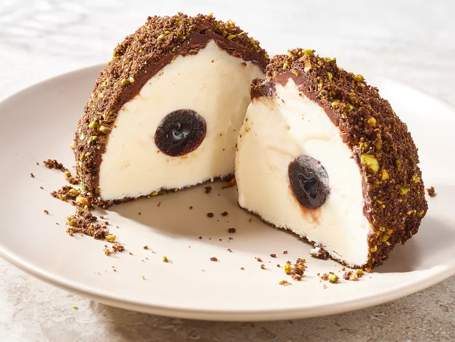

Tartufo

Description
Tartufo is a classic Italian dessert that you can make at home. It requires some patience as there is freezing time involved.
Rolling the tartufos in pistachio and cookie crumbs is extra delicious.
Ingredients
- 1 quart vanilla ice cream (such as Haagen Dazs®)
- 8 maraschino cherries (such as Luxardo®)
- 2 cups semisweet chocolate chips
- 5 tablespoons unrefined coconut oil
Steps
- Gather all ingredients.
- Let ice cream stand at room temperature until slightly softened, about 10 minutes.
- Using a 2 oz. (1/4-cup) ice-cream scoop, place 1 scoop of ice cream into the bottom of each bowl.
- Working with 1 bowl of ice cream at a time, gather overhanging plastic, wrap it up around ice cream, and gently twist it to form a ball.